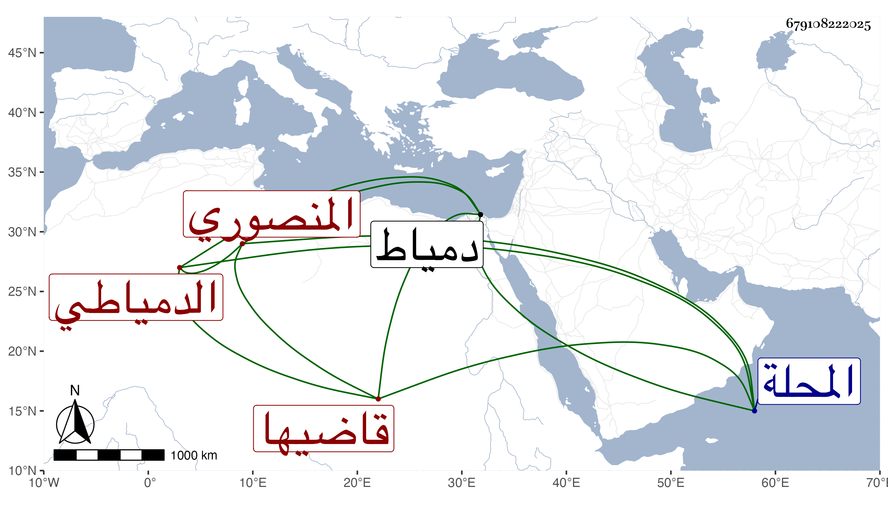

0902Sakhawi.DawLamic.ITO20230111-ara1.EIS1600.679108222025
Biography ID: 679108222025
539
محمد بن محمد بن محمد بن خلف بن كميل الصلاح بن الجلال المنصوري الدمياطي قاضيها الماضي أبوه ويعرف كسلفه بابن كميل. نشأ في كنف أبيه فحفظ القرآن وغيره وأخذ عن الشهاب الجديدي ونحوه بل كتب بخطه أنه أخذ عن الجلال المحلي وأنه قرأ على العبادي والمناوي ثم الجوجري وآخرين وناب في قضاء دمياط عن والده ثم استقل به وكذا ولي قضاء المحلة بعد صرف أوحد الدين بن العجيمي والمنصورة وغيرها وراج أمره في القضاء جدا لما اشتمل عليه من العقل والتودد والكرم والبذل والمداراة وحسن العشرة والأدب وسلوك أنواع الرياسة مع حسن الشكالة وصفاء الذهن وجودة الفهم والمزاحمة للفضلاء بذلك ولم يزل في نمو من هذا كله إلى أن راموا منه التكلم فيما يتعلق بالذخيرة من الأوقاف المعينة وغيرها وشافهه السلطان بذلك فأظهر القبول ثم فر من الترسيم واستمر مختفيا إلى أن طلع إليه بدون واسطة ودفع إليه مالا وبالغ في طلب الاستقضاء فأجابه . ولم يلبث أن مات في ليلة الجمعة عاشر شوال سنة سبع وثمانين ودفن من الغد بجوار فتح الأسمر وأظنه جاز الخمسين رحمه الله وإيانا وعوضه الجنة .
